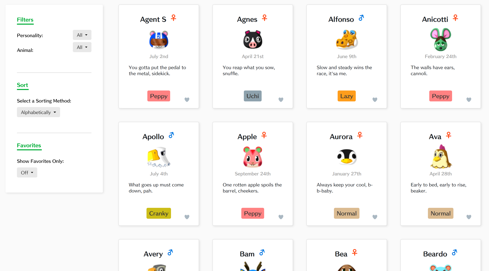

MoriDB
December 2019 | UI/UX
With so much content and information available on modern websites,
live filtering has become a powerful feature to help users immediately
find what they seek. A good filtering system combined with a good UI can
improve user experience not only by allowing users to avoid the frustration of clutter,
but by giving them a way to seamlessly navigate your website.
As an exploration of filtering systems, I built a database of Animal Crossing characters— those
cute little Nintendo animals— that supports live filtering and sorting.
The goal of this project was to help Animal Crossing fans like me find and save their favorite
characters!
Let's get started :]
Data Collection
Before anything, I had to collect my data.
I used Python's BeautifulSoup library to web scrape for Animal Crossing villager data,
which included animal type, gender, personality, birthday, and catchphrase.
I couldn't find all of the information about villagers that I wanted to collect on a single website,
so I actually ended up
having to scrape and synthesize data from 4 different sources. Fortunately, now anyone who
wants to use my application will have the convenience of being able to view villager data
in one place! üòÅ
Card Prototyping
It was important for me to be able to communicate the information associated with each
villager in a concise, clean way. The information I had to display on the villager cards
included 6 fields— image, name, gender, catchphrase, personality, and birthday.
The question was, how could I best display this information such that it would be easy for a user to parse?
To answer this question, I created 3 different card designs in Figma, and evaluated them.
You can see the three designs below:
And here are my notes from when I evaluated each of these designs:
DESIGN #1:
- Too much contrast between the bold and standard fonts.
- It over-labels the content. A more defined layout would not need any labels in the first place.
DESIGN #2:
- It's fine, but too much of the text is consolidated at the bottom of the card, making it a little uncomfortable to look at.
- No need to label that the animal is a deer— it's evident enough from the picture!
DESIGN #3:
- The distribution of text is much better, but the personality label looks out of place. It would look better with the same personality label as design #2.
In the end, I found that I liked the overall design of #2 and the text distribution of #3, so I
combined their best elements to design my final card:
Usability Design Principles
Another main focus for this project was the sidebar containing the filtering options.
I wanted to make sure it could streamline user experience, and be intuitive enough
to not require any further explanation.
For the sidebar, I labeled the categories with underlined, bold green text
and used subtle grey horizontal lines to indicate separate functionality
between Filter, Sort, and Favorites.
Additionally, I made sure that the sidebar was sticky and would
follow the user as they scrolled. It would probably be very annoying for a
user to have to constantly scroll all the way up to change the
fields that they filtered and sorted on. Ensuring that this functionality
is available wherever the user is on the page makes for a much less
frustrating experience!
Development
In organizing my cards, I stuck to a grid layout with with ample whitespace, since
there were already a lot of elements (over 100 villager cards!) on the screen.
I chose a grid because the uniformity of it helps users parse information more
quickly.
Here's what the page looks like when you first open it. The villagers are organized
alphabetically by name by default.

You can filter by either personality or animal type. You can also
sort them alphabetically, or by their birthdays. (The game actually
celebrates villager birthdays, so this feature is handy!)
Lastly, you also have the option of favoriting villagers by clicking
the little heart in the corner of the card.
Ok, let's try it out. Here's what you see if you choose to filter on a "Peppy" personality:
Nice, and what if we wanted to sort by birthday on these Peppy villagers?

This works too!
Conclusion & Future Work
I loved working on this project, since it was a pleasant intersection between my affinity for
cute video games and web apps! There are a couple things I could polish however, before I
consider this a finished work.
Currently, my application doesn't allow you to filter for multiple things on a single field.
So for example, say you want to filter for both the "Peppy" and "Jock" personalities. This
cannot be done— you can only filter one at a time. If I wanted to implement this I'd
have to change the dropdowns to a different UI element, since dropdowns imply a single choice!
Additionally, it currently relies on third party image links. This is quite bad especially
if those websites go poof. üí•
To remedy this, I would need to download the image files using a Python script, then host them somewhere (either
on my server or on a database like MongoDB).
Overall, this was a really fun project to work on, and I'm excited by the ways I can improve it! üòÄ